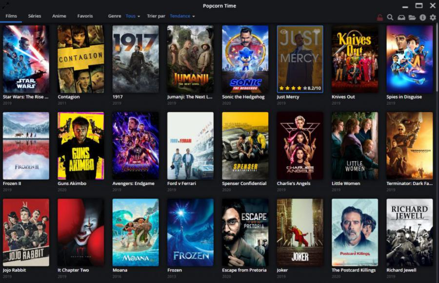

Os melhores carros familiares a preços muito acessíveis
Tem-se conhecimento que existem carros para todas as circunstâncias, e por isso mesmo é sempre necessário realizar uma escolha adequada para que não surjam arrependimentos posteriores.
Até porque, deve ter sempre em consideração o local onde reside e para que efeito precisa do carro. Isto porque, por exemplo, comprar um carro citadino para quem resida numa zona rural, provavelmente não será a escolha mais apropriada, mas sim um todo-o-terreno, ou se residir numa cidade e pretender fazer pequenos percursos a opção da compra de um citadino poderá ser a escolha mais acertada.Uma outra questão a abordar, será o número de elementos do agregado familiar que será necessário transportar num mesmo veículo. Isto é, não deverá ter somente em conta o número existente do agregado familiar mas também pensar no futuro. E quando se fala em famílias mais numerosas nada como considerar versões específicas dos carros familiares.
Assim, e tendo em apreciação desde o preço, a tecnologia, o conforto, a capacidade do porta-malas até ao espaço do habitáculo, o Kia Ceed SW é o carro que lidera este top-5 seguido do Ford Kuga e do japonês Nissan Juke. Os dois últimos automóveis que fecham os 5 melhores nesta categoria são o Toyota Corolla e o Mercedes GLA.
As novas colunas da XBOOM que chegam para dominar a concorrência
Ler Mais >>
